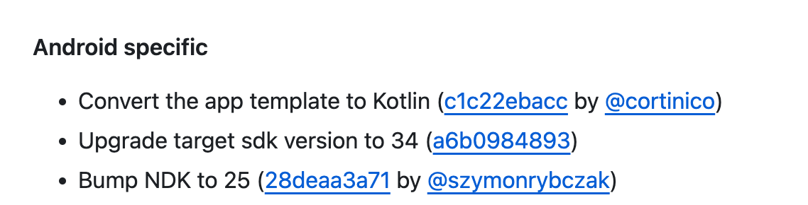

들어가며
구글의 새 정책이 우리 팀의 발등에 떨어진 불이 됐다. 모든 앱이 Android 14 (API 수준 34)를 타겟으로 맞춰야만 업데이트를 할 수 있다는데, 확인해보니 우리 프로젝트는 아직 기준 미달이었다. 그렇게 갑작스럽게, 대규모 버전 업그레이드라는 시급한 과제가 눈앞에 닥쳤다.
처음에는 무작정 android/build.gradle의 버전을 올려버리고
(...)
compileSdkVersion = 34
targetSdkVersion 34버전을 올린 후에 에러가 난 라이브러리들을 업그레이드 시켜줬는데 정작 앱은 실행이 되지 않는 문제가 발생했다. 앱 내의 SDK 버전을 올리기 위해서는 React Native 버전을 올려야 되는 경우가 있는데, RN 공식문서의 ChangeLog를 확인해보았다.

원인을 파악했으니 이제 해결을 해보자.
0.73 업그레이드 방법
사전 작업
- 리액트 네이티브 공식 문서 Upgrading to new versions
- React Native 코드 변경점을 보여주는 사이트 React Native Upgrade Helper
@rnx-kit/align-deps— 의존성 버전 정렬 도구
작업 과정 요약
# {{VERSION}} and {{REACT_VERSION}} are the target versions
yarn add react-native@{{VERSION}}
yarn add react@{{REACT_VERSION}}
npx @rnx-kit/align-deps --requirements react-native@0.73 --writeimport { useEffect } from "react";
export function App() {
useEffect(() => {
console.log("RN 0.73 ready");
}, []);
return <SafeAreaView style={styles.root} />;
}| 항목 | 0.72 | 0.73 |
|---|---|---|
| compileSdkVersion | 33 | 34 |
| Kotlin | 1.8.0 | 1.8.10 |
| NDK | 23 | 25 |
트러블슈팅
error: #import <React/RCTThirdPartyFabricComponentsProvider.h> file not found
Pod 캐시를 지우고 다시 설치하면 해결된다. 긴 인라인 코드도 줄바꿈되어 화면을 넘지 않는다.
error: assigning to id<UNUserNotificationCenterDelegate> _Nullable from incompatible type
델리게이트 선언을 헤더에 추가한다.
마치며
아마 내년에도 또 해야겠지?… 그때는 이 글이 나를 구원해 주길.